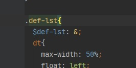

Sass 기본(Basic) 사용 방법
- Sass 기본(Basic) 사용 방법
-
Sass 언어는 Jade와 마찬가지로 변수와 중첩, 믹스인, 확장, 상속 등 다양하고 유용한 기능을 지원합니다.
실무에 Sass 언어를 활용하면 CSS를 보다 효율적으로 사용할 수 있습니다.
- Sass 사용 규칙 파악하기 - 주석
-
Sass 주석(Comments)_ 주석은 두 가지 방법으로 달 수 있습니다.
하나는 CSS로 변경 작업을 거칠 때 해석되는 주석이며, 다른 하나는 해석되지 않는 주석입니다.
CSS로 변경될 때 해석되는 주석은 CSS의 기본 주석(/**/)과 동일하게 사용하며, 해석되지 않는 주석은 자바스크립트의 한 줄 주석(//)과 동일하게 사용합니다.
다음을 보고 실습을 따라 합니다.
여기서 실습한 파일은 [src/sass] 디렉터리에 [modules] 디렉터리를 추가한 후 새로운 파일을 생성해 작성했습니다.
- Sass 사용 규칙 파악하기 - 중첩규칙(Nested Rules)
-
다음처럼 부모 선택자 내부에 자식 선택자를 포함하는 중첩 구조 형태로 들여쓰기하면
CSS로 변경할 때 상위 선택자를 자동으로 붙인 상태로 처리합니다.
중첩 규칙을 효과적으로 사용하면 CSS 코드의 중복 문제를 해결할 수 있습니다.
- Sass 부모참조 선택자(Referencing Parent Selectors: &)
-
부모 선택자에 중첩 형태로 자식 선택자를 사용할 때 앤퍼센드(&) 기호를 앞에 붙이면 부모 선택자를 참조합니다.
이것은 가상 클래스(Pseudo-Class), 가상 요소(Pseudo-Element) 등을 사용할 때 주로 참조하는 방법입니다.
반면, & 기호 앞에 선택자를 추가하면 아래에서 빨강 화살표 부분처럼 & 가 참조하는 상위 선택자 앞에 해당 선택자가 붙습니다.
- 속성 중복(Nested Properties)
-
중첩 규칙과 마찬가지로 속성도 중첩하여 사용할 수 있습니다.
다음처럼 속성을 작성한 후 한 줄 아래쪽에 들여쓰기하여 속성의 세부 항목을 입력합니다.
CSS로 변경할 때 속성 이름을 하나로 합칩니다.
세부 속성이 있는 모든 속성(margin, padding, border, font, background 등)은 이 방법을 사용할 수 있습니다.
이를 활용하면 중복되는 CSS 속성 이름 값을 줄여 효율적으로 작성할 수 있습니다.
- Sass 선택자 상속(Selector Inheritance : @extend)
-
선택자 상속은 말 그대로 선택자에 설정된 속성을 그대로 물려받습니다.
CSS에는 이러한 능력이 없어 효율이 떨어지는 반면, Sass는 상속 기능을 지원하기에 효율적으로 코드 관리가 가능합니다.
선택자를 상속할 때는 @extend 키워드를 선택자 이름 앞에 붙여 사용합니다.
다른 페이지에 있는 스타일도 확장할 수 있습니다.
저렇게 @import로 연결되어있다면 말이죠.
- 대체 선택자 %
-
% 를 활용하여 작성하면 해당 내용은 css 파일로 컴파일되지 않습니다.
하지만 그 내용은 얼마든지 가져다 쓸 수 있습니다.
소스를 더 효율적으로 관리할 수 있습니다.
- 부모 선택자 변수로 지정
-
